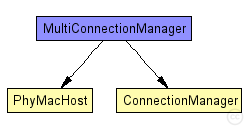
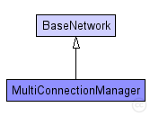

This documentation is released under the Creative Commons license
This documentation is released under the Creative Commons licenseThis example shows how to use multiple ConnectionManagers in your simulation.
The network contains two independent ConnectionManagers: "ISMChannel" and "GSMChannel". There also is its own list of hosts for each channel "ISMNode" and "GSMNode". Both types of hosts use BurstApplLayer <-> BaseNetwLayer <-> CSMAMacLayer <-> PhyLayer as network stack. Whereas the PhyLayer uses "SimplePathlossModel" as AnalogueModel and "SNRThresholdDecider" as Decider.
The channel a host uses is defined in its NICs "connectionManagerName" parameter.
Since the settings for the SimplePathlossModel differ for the GSM- and ISM-Nodes there are two seperate <config>.xml for them (GSMmodels.xml and ISMmodels.xml).
The omnetpp.ini contains the following run configurations:
The following diagram shows usage relationships between types. Unresolved types are missing from the diagram. Click here to see the full picture.
The following diagram shows inheritance relationships for this type. Unresolved types are missing from the diagram. Click here to see the full picture.
| Name | Type | Description |
|---|---|---|
| BaseNetwork | network | (no description) |
| Name | Type | Default value | Description |
|---|---|---|---|
| playgroundSizeX | double |
x size of the area the nodes are in (in meters) |
|
| playgroundSizeY | double |
y size of the area the nodes are in (in meters) |
|
| playgroundSizeZ | double |
z size of the area the nodes are in (in meters) |
|
| cmType | string | "org.mixim.base.connectionManager.ConnectionManager" |
connection manager to use |
| wuType | string | "org.mixim.base.modules.BaseWorldUtility" |
world utility to use |
| numGSMHosts | int |
total number of weak hosts in the network |
|
| numISMHosts | int |
total number of strong hosts in the network |
| Name | Value | Description |
|---|---|---|
| isNetwork | ||
| display | bgb=$playgroundSizeX,$playgroundSizeY,white,,;bgp=10,50 |
| Name | Type | Default value | Description |
|---|---|---|---|
| connectionManager.coreDebug | bool |
debug switch for core framework |
|
| connectionManager.sendDirect | bool |
send directly to the node or create separate gates for every connection |
|
| connectionManager.pMax | double |
maximum sending power used for this network [mW] |
|
| connectionManager.sat | double |
minimum signal attenuation threshold [dBm] |
|
| connectionManager.alpha | double |
minimum path loss coefficient |
|
| connectionManager.carrierFrequency | double |
minimum carrier frequency of the channel [Hz] |
|
| world.useTorus | bool |
use the playground as torus? |
|
| ISMChannel.coreDebug | bool |
debug switch for core framework |
|
| ISMChannel.sendDirect | bool |
send directly to the node or create separate gates for every connection |
|
| ISMChannel.pMax | double |
maximum sending power used for this network [mW] |
|
| ISMChannel.sat | double |
minimum signal attenuation threshold [dBm] |
|
| ISMChannel.alpha | double |
minimum path loss coefficient |
|
| ISMChannel.carrierFrequency | double |
minimum carrier frequency of the channel [Hz] |
|
| ISMChannel.drawMaxIntfDist | bool | false |
should the maximum interference distance be displayed for each node? |
| GSMNode.netwl.stats | bool |
stats switch |
|
| GSMNode.netwl.headerLength | int |
length of the network packet header (in bits) |
|
| GSMNode.tranl.stats | bool |
stats switch |
|
| GSMNode.tranl.headerLength | int |
length of the network packet header (in bits) |
|
| GSMNode.sessl.stats | bool |
stats switch |
|
| GSMNode.sessl.headerLength | int |
length of the network packet header (in bits) |
|
| GSMNode.presl.stats | bool |
stats switch |
|
| GSMNode.presl.headerLength | int |
length of the network packet header (in bits) |
|
| GSMNode.appl.headerLength | int |
length of the application message header (in bits) |
|
| ISMNode.netwl.stats | bool |
stats switch |
|
| ISMNode.netwl.headerLength | int |
length of the network packet header (in bits) |
|
| ISMNode.tranl.stats | bool |
stats switch |
|
| ISMNode.tranl.headerLength | int |
length of the network packet header (in bits) |
|
| ISMNode.sessl.stats | bool |
stats switch |
|
| ISMNode.sessl.headerLength | int |
length of the network packet header (in bits) |
|
| ISMNode.presl.stats | bool |
stats switch |
|
| ISMNode.presl.headerLength | int |
length of the network packet header (in bits) |
|
| ISMNode.appl.headerLength | int |
length of the application message header (in bits) |
// //This example shows how to use multiple ConnectionManagers in your simulation. // //The network contains two independent ConnectionManagers: "ISMChannel" and "GSMChannel". //There also is its own list of hosts for each channel "ISMNode" and "GSMNode". //Both types of hosts use BurstApplLayer <-> BaseNetwLayer <-> CSMAMacLayer <-> //PhyLayer as network stack. Whereas the PhyLayer uses "SimplePathlossModel" //as AnalogueModel and "SNRThresholdDecider" as Decider. // //The channel a host uses is defined in its NICs "connectionManagerName" parameter. // //Since the settings for the SimplePathlossModel differ for the GSM- and ISM-Nodes //there are two seperate <config>.xml for them (GSMmodels.xml and ISMmodels.xml). // //The omnetpp.ini contains the following run configurations: // //- Config1 - Three hosts which use the same ConnectionManager. No propagation delay. //- Config2 - Same as Config1 but with propagation delay. //- Config3 - Two hosts using the GSMChannel ConnectionManager and two host using // the ISMChannel ConnectionManager. No propagation delay. //- Config4 - Same as Config3 but with propagation delay. //- General - Same as Config3 // network MultiConnectionManager extends BaseNetwork { parameters: int numGSMHosts; // total number of weak hosts in the network int numISMHosts; // total number of strong hosts in the network @display("bgb=$playgroundSizeX,$playgroundSizeY,white,,;bgp=10,50"); submodules: ISMChannel: ConnectionManager { parameters: @display("p=121,0;i=abstract/multicast;is=s"); } GSMNode[numGSMHosts]: PhyMacHost { parameters: numHosts = numGSMHosts; @display("p=70,91;b=42,42,rect,red;i=device/palm"); } ISMNode[numISMHosts]: PhyMacHost { parameters: numHosts = numISMHosts; @display("p=202,91;b=42,42,rect,green;i=device/wifilaptop"); } connections allowunconnected: // all connections and gates are to be generated dynamically }
This documentation is released under the Creative Commons license